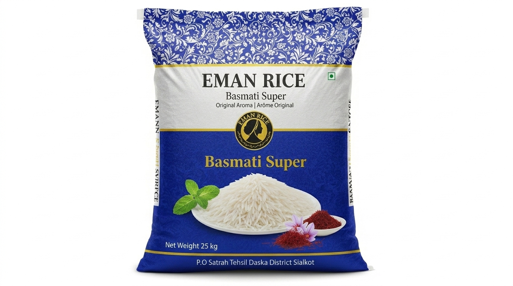

Basmati
Basmati Super
Pure Aroma. Perfect Every Time.
Experience the essence of authentic basmati with Basmati Super featuring naturally aged grains, an exquisite aroma, and exceptional elongation. Crafted for those who appreciate perfection in every bite.
Inquire About This Product →